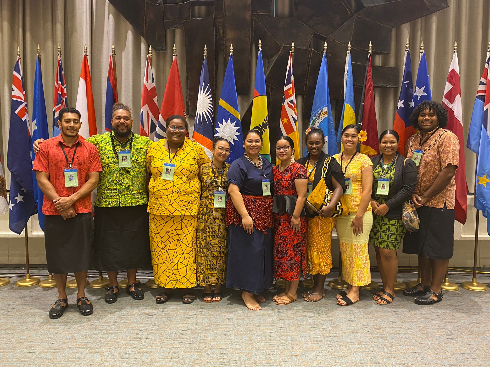

Project Description: The 12th Pacific Islands Conference of Leaders marked a significant milestone as it brought together leaders from 16 Pacific Island Nations in Honolulu, Hawai’i, after a six-year hiatus. The conference aimed to facilitate high-level discussions on regional priorities and concerns, drawing participation from both Pacific Island Nations’ leaders and representatives from the Council of Regional Organisations in the Pacific (CROP) for a closed-door meeting.
Read more about the conference

My Role and Responsibilities: During the summer leading up to the conference, I underwent comprehensive IT training with the Pacific Islands Development Program (PIDP) to play a pivotal role in facilitating the event’s digital component. My responsibilities included:
Technical Setup: I was tasked with setting up the necessary digital equipment and configuring the streaming platforms to ensure a seamless online experience for remote participants. This involved meticulous checks to ensure that both hardware and software components were functioning as expected.
Quality Assurance: I conducted rigorous testing of the live stream to identify and promptly resolve any technical issues that may have arisen during the event. This included troubleshooting and ensuring that audio and video quality met the highest standards.
Data Backup: I implemented a secure backup system on the cloud to safeguard the recording of the conference, ensuring that no critical content would be lost in the event of technical glitches.
Monitoring and Management: Throughout the conference, I assumed the role of a live stream manager, monitoring the stream’s performance in real-time. This included managing audience engagement tools and providing technical support to delegates to ensure their comfort and proficiency in using the conference technology.
What I Learned: The technical side of livestreaming the event was a significant undertaking, as we decided to independently webcast the conference instead of relying on a third-party company for these services. While we did seek assistance from the contracted company typically hired by the East-West Center, our project operated with a substantial degree of autonomy.
Through this experience, I gained valuable insights into event technology management, including the intricacies of livestreaming, troubleshooting in real-time, and ensuring a seamless virtual experience for remote participants. This project not only enhanced my technical skills but also taught me the importance of adaptability and self-reliance when managing complex digital initiatives. It was a testament to the potential of in-house technical expertise and the successful execution of a high-stakes event with minimal external dependency.